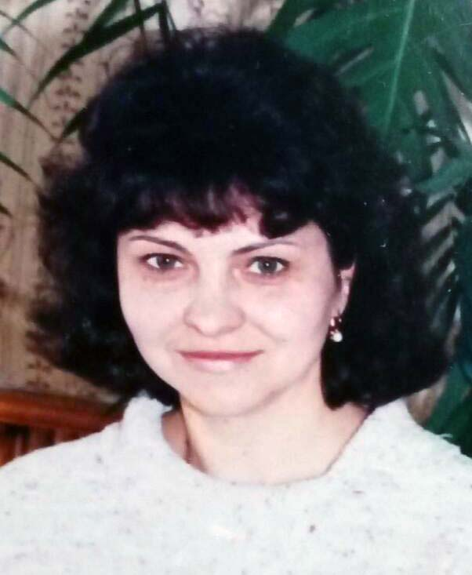

Возраст: 60
Место жительства: г. Назарово
Основное занятие: Регистратор в поликлинике
Отец: Тыряткин Василий Михайлович (14.04.1931 - 12.08.2001)
Мать: Тыряткина (Казакова) Лидия Леонтьевна (20.05.1934 - 05.07.2007)
Брат: Тыряткин Анатолий Васильевич
Муж: Доронин ...
Сын: Доронин Дмитрий Михайлович (14.02.1982)
Дочь: (Доронина) Мария Михайловна (11.01.1987)
Родилась: 05.12.1960. Отец: Тыряткин Василий Михайлович. Мать: Тыряткина (Казакова) Лидия Леонтьевна.
Вышла замуж. Муж: Доронин ....
Родился сын: Доронин Дмитрий Михайлович, 14.02.1982. Отец: Доронин ....
Родилась дочь: (Доронина) Мария Михайловна, 11.01.1987. Отец: Доронин ....
. |